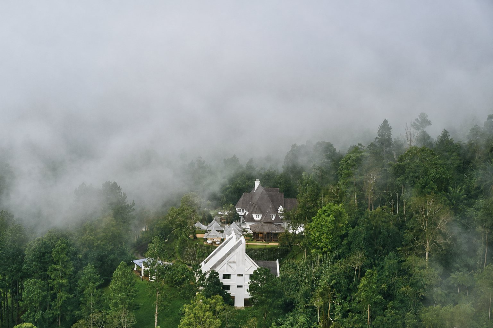
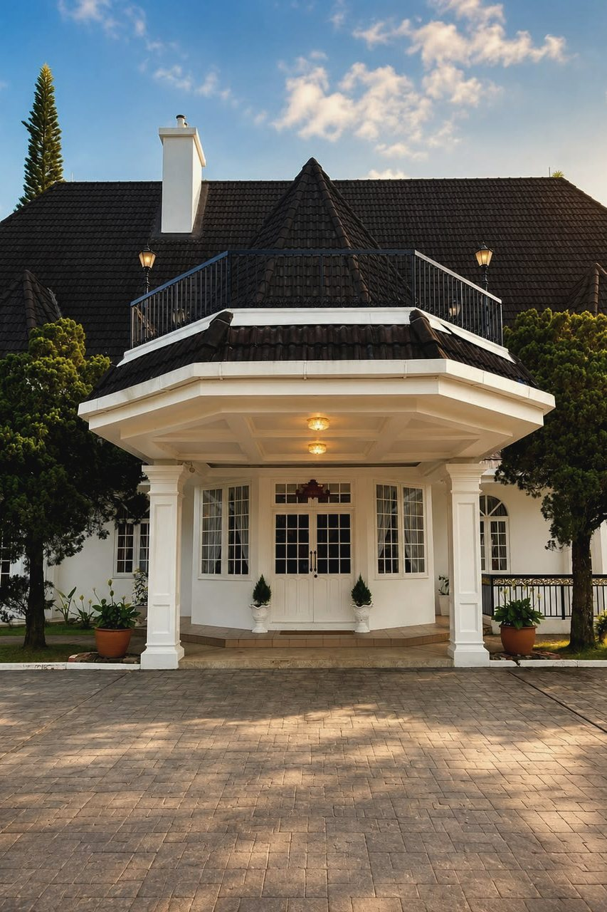
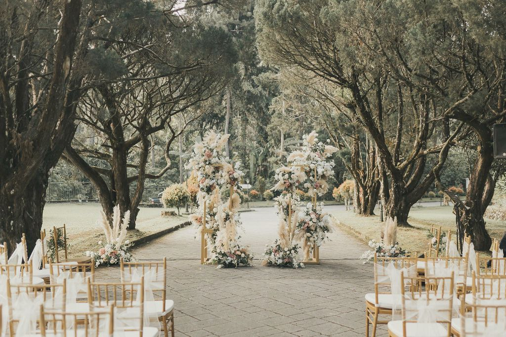
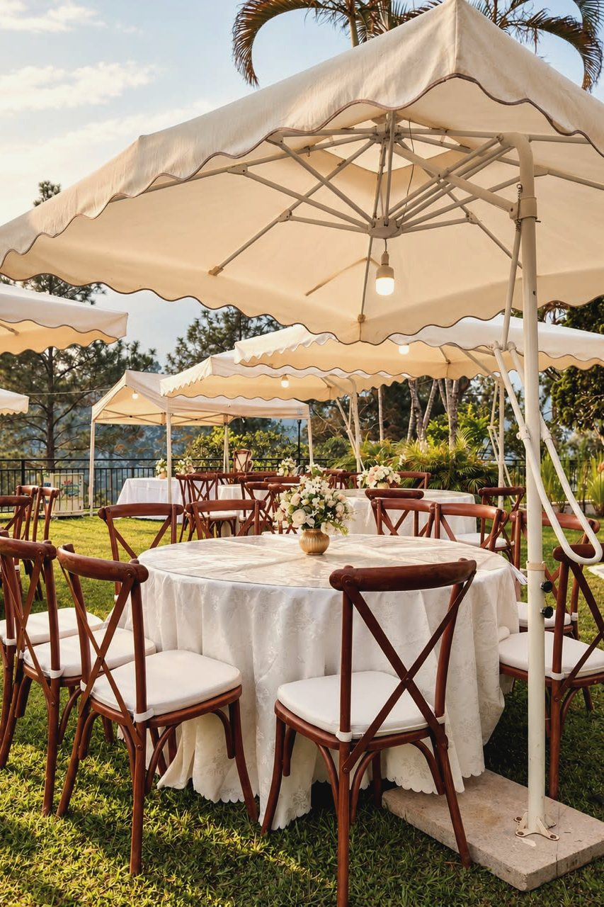
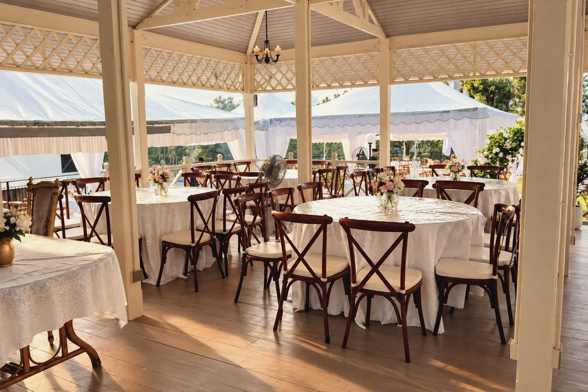
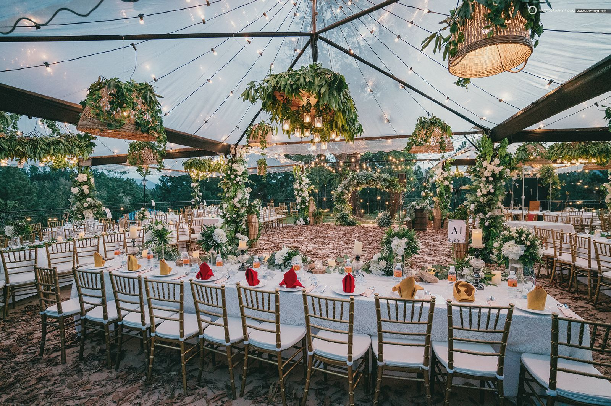
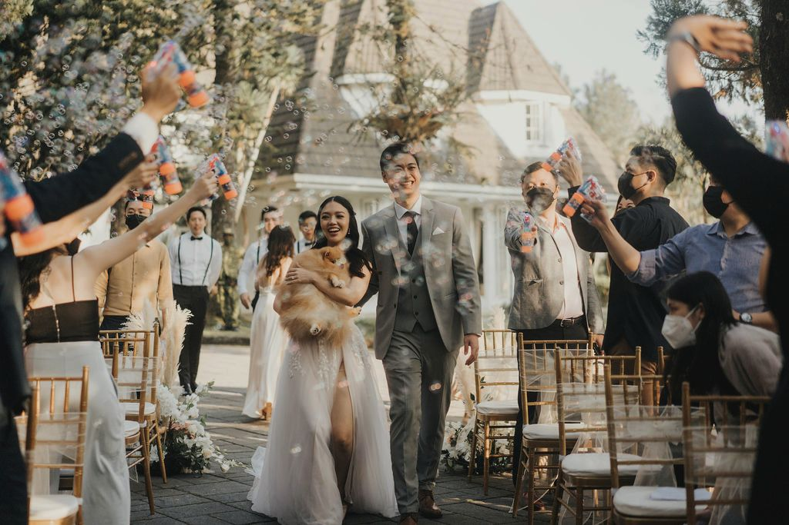

A destination wedding above the clouds
Private Estate | 18–22°C Highland Air | 45 Minutes from Kuala Lumpur
Dani Hill is a private garden estate in the cool hills of Genting Highlands, Malaysia. Couples from Singapore and across Southeast Asia come here for a wedding that feels a world away, yet is easy for every guest to reach.
A destination wedding venue in Malaysia, made private
Most destination weddings in Southeast Asia mean heat, humidity and a shared hotel ballroom. Dani Hill offers the opposite: a private highland estate where the gardens, the heritage Mansion and Villa Dani are reserved for your wedding alone.
The air stays cool all day, the pines and rainforest frame every photograph, and your guests can arrive from Kuala Lumpur in under an hour.
- 01
Cool highland weather
Typically 18–22°C year round, so garden ceremonies and alfresco dinners stay comfortable, even at midday. No tropical heat, no wilting flowers.
- 02
A private estate, just for you
We host one wedding per day. The lawns, the Cloud Garden, the Mansion and Villa Dani are yours, with no other parties and no shared spaces.
- 03
Scenery that needs no styling
Pine trees, misty hills and views over the Awana valley make a natural backdrop for your ceremony and portraits.
- 04
Close to KL, worlds away
About 45 minutes from Kuala Lumpur by car, with coach access to the estate. It feels like an escape without a long journey for your guests.
- 05
Stay where you celebrate
Up to 30 guests sleep on site across the Mansion and Villa Dani, so family can stay for the whole wedding weekend.
- 06
Your vendors, your vision
Bring your own planner, caterer and decorator from home or Malaysia, or ask us for recommendations we trust.
One celebration, three unhurried days
A destination wedding is more than one evening. Many couples bring their closest family and friends to the estate for the whole weekend.
- 01
Arrive & welcome
Guests arrive from Kuala Lumpur or KLIA and settle in, then gather for a welcome dinner on the lawn.
- 02
The ceremony
Vows in the garden under the pines, followed by cocktails on the Porch as the mist rolls in.
- 03
The reception
Dinner and dancing in the Mansion or a marquee on the lawn, for up to 300 guests, or 500 with a surcharge.
- 04
Farewell brunch
A slow breakfast in the cool morning air before everyone heads home.
Who chooses a highland wedding
Dani Hill suits couples who want their wedding to feel like a getaway, and guests who want to stay a little longer.
- Weekend escapes
Couples who want a wedding that feels like a retreat, with the focus on the people who matter most.
- Overseas families
Families travelling from Singapore, Indonesia, Brunei, Thailand, the Philippines, Hong Kong and beyond, who want a reason to extend their stay.
- Intimate weddings
Small ceremonies with close guests, where a private estate means genuine time together.
- Multi-day weddings
Welcome dinners, ceremonies, receptions and farewell brunches across a full wedding weekend.

Easy for guests flying in
Kuala Lumpur is a short flight from most Southeast Asian cities. From Kuala Lumpur International Airport (KLIA), guests can drive up to the estate, and 40-seater coaches can reach Dani Hill directly.
Private chauffeur transfers can be arranged for the couple and family. Up to 30 guests stay on site, and the wider party can book hotels in Genting Highlands, a short drive away.
About the residences →




Destination wedding questions
Why choose Genting Highlands for a destination wedding?
The highlands stay around 18–22°C, far cooler than the rest of Malaysia and Southeast Asia, which makes outdoor ceremonies comfortable. Dani Hill adds a private estate with gardens, a heritage Mansion and on-site accommodation, about 45 minutes from Kuala Lumpur.
How do overseas guests get to Dani Hill?
Most guests fly into Kuala Lumpur International Airport (KLIA) and travel up by car or coach. 40-seater coaches can reach the estate, and private chauffeur transfers can be arranged.
Where will our guests stay?
The Mansion and Villa Dani sleep up to 30 guests on site, usually the couple and close family. Other guests can stay at hotels in Genting Highlands, a short drive away.
How many guests can we invite?
Up to 300 guests as standard, or up to 500 with a surcharge. We host one wedding per day, so the estate is reserved for you.
Can we bring our own wedding planner and vendors from overseas?
Yes. Dani Hill is venue-only, so you can work with your own planner, caterer and decorator. For couples planning from abroad we recommend a local planner, and we're happy to introduce ones we've worked with.
What is the best time of year for a highland wedding?
Dani Hill is a year-round venue thanks to the cool climate. Mist is common in the mornings and evenings, so every outdoor plan has a covered alternative in the Mansion.
Plan your destination wedding
Tell us your date and where you're travelling from, and we'll reply with availability, usually within one working day.
Thank you.
Your enquiry has been received. Our events team will be in touch, usually within one working day.
A confirmation has been sent to your email.
Reference: